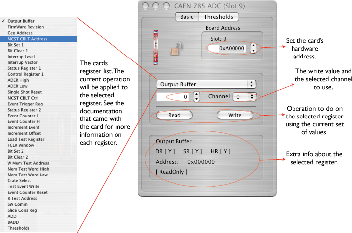
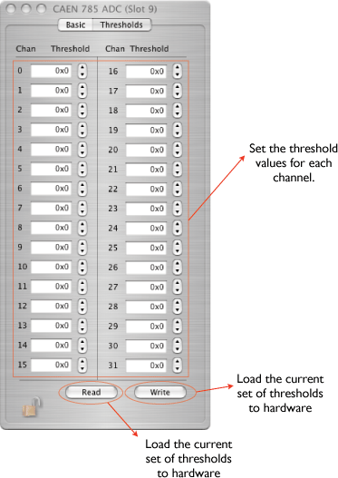

The Model V785 is a 1-unit wide VME 6U module housing 32 Peak Sensing Analog-to-Digital Conversion channels. Each channel is able to detect and convert the peak value of the positive analog signals fed to the relevant connectors. The full scale range of the input signals is 4 V with 1 mV LSB (optionally 8 V with 2 mV LSB).
The outputs of the stretching sections are multiplexed and subsequently converted by a fast 12 bit ADC module (<5.7 µs for all channels). A sliding scale technique is employed to improve the differential non linearity.
The Mod. V785 offers a 32 event buffer memory. The module works in A24/A32 mode; the data transfer occurs in D16, D32, BLT32/MBLT64 or CBLT32/CLT64 mode. Multicast commands also supported. Programmable zero and overflow suppression complete the features of the unit. The board can be equipped with a special circuitry (live insertion) which allows the User to insert (remove) it into (from) the crate without switching the power off.
The configuration icon for the V785 is: 

Thresholds can be set from the Basic dialog or from the Threshold dialog. Thresholds can also be set from the Hardware Wizard.

The data records for the CAEN cards is exactly as produced by the cards with the addition of a header that 'wraps' the data for ORCA. It is a variable length record. Only the long form is used. The format is:
version 2 format:
xxxx xxxx xxxx xxxx xxxx xxxx xxxx xxxx ^^^^ ^^^^ ^^^^ ^^-----------------------Object ID (from header) -----------------^^ ^^^^ ^^^^ ^^^^ ^^^^-n longs + 2 xxxx xxxx xxxx xxxx xxxx xxxx xxxx xxxx ^^^^ ^^^^-------------------------------spare ----------^^^^--------------------------crate ---------------^^^^---------------------card --------------------^^^^ ^^^^ ^^^^ ^^^^-spare n longs of data follow immediately. The format is as described in the card's documentation.version 1 (old format):
xxxx xxxx xxxx xxxx xxxx xxxx xxxx xxxx ^^^^ ^----------------------------------Object ID (from header) ----------^^^^--------------------------crate ---------------^^^^---------------------card --------------------^^^^ ^^^^ ^^^^ ^^^^-n bytes + 4 n bytes of data follow immediately. The format is as described in the card's documentation.